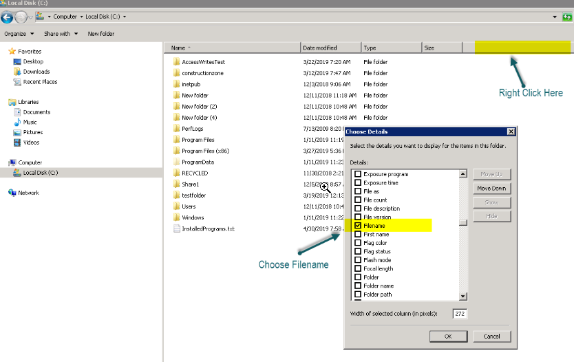

Summary: Administrator has deleted a disabled user's folders from a share on a file server, however when accessing the share resource from the AIC, those folder are still visible even after a full rescan and bulk import. FSAA scan job and bulk import shows no errors. Running below hotfixes did not help resolve, either.
Issue: In this case even
though the customer deleted a disabled users folder, there was still a duplicate folder of
the same object name that was "hidden" in the same root directory on the share. It was
hidden in the fact that instead of displaying the correct folder name in CIFS, it showed
as a folder called "Documents". When we right clicked>Properties and went to the
security tab we could see that the "Object Name" was in fact named the same as the
original folder structure. So, AIC was able to pick up on this and correctly display it as
such.
Instructions: A good way to
see if CIFS is actually reporting the correct name of the folders displayed as either
"Documents" or "public Documents" is to bring up file explorer in Windows and go to the
share that contains those folders, choose another column header by right clicking on the
columns and choosing .More, then locate and select the Filename attribute. Once you do
this you will now see the true name of the folder. Issue seems to stem from something that
Microsoft is doing or something that is CIFS related. In any case, it doesn't appear that
StealthAUDIT is to blame.

Product: AIC
Module:
AIC - Entitlement Review;AIC - Remediate Open Shares;AIC - Reporter;SA - DC - FSAA -
Activity;SA - DC - FSAA - Permissions
Versions:
Windows File Servers (Likely not windows OS specific). Not Reproducible
Legacy Article ID:
2380